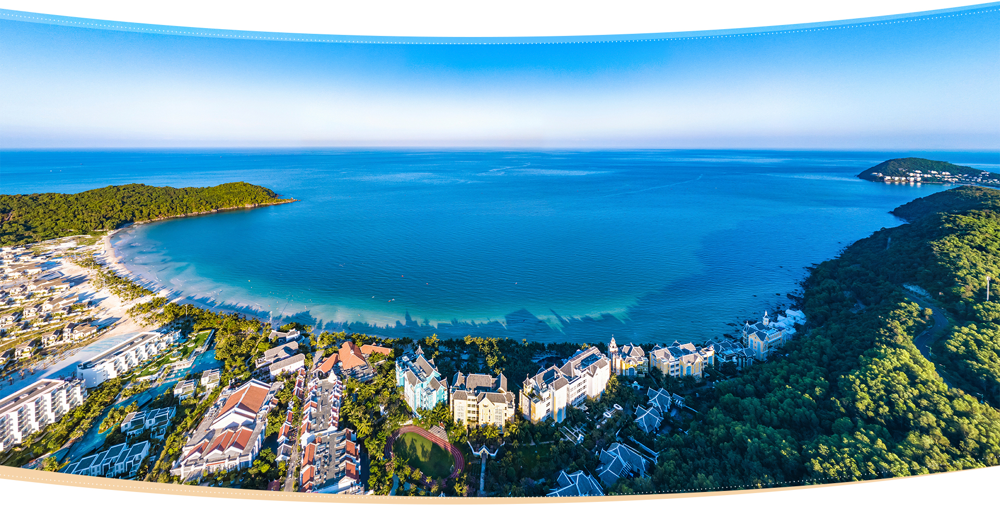

VÒNG QUANH VIỆT NAM


Phú Quốc |
|
Là hòn đảo xinh đẹp thuộc địa phận tỉnh Kiên Giang, nằm trong vịnh Thái Lan, đảo Phú Quốc từ lâu đã nổi tiếng với du
khách từ mọi miền đất nước và cả khách du lịch quốc tế. Không chỉ là hòn đảo xinh đẹp với phong cảnh thiên nhiên yên bình, hoang sơ,
khí hậu thuận lợi cho hoạt động vui chơi, nghỉ dưỡng, Phú Quốc còn là điểm đến lý tưởng cho nhiều hoạt động khám phá thiên nhiên kỳ thú... Vài trải nghiệm không nên bỏ lỡ khi du lịch Phú Quốc: |

Chợ nổi Cái Răng |
|
Nhắc đến nét văn hóa rất đặc trưng của đồng bằng sông Cửu Long, không thể không nhắc đến chợ nổi, một loại hình chợ độc đáo mà
có lẽ không miền nào khác trên đất nước ta có được. Trong đó chợ nổi Cái Răng Cần Thơ là khu chợ sầm uất, tiêu biểu nhất, đã được tạp
chí du lịch Rough Guide của Anh Quốc bình chọn là một trong 10 khu chợ ấn tượng nhất thế giới, trang web du lịch nổi tiếng
Youramazingplaces cũng bình chọn là 1 trong 5 chợ nổi đẹp, thú vị nhất khu vực Châu Á... Hoạt động giải trí nên đi khi du lịch ở chợ nổi Cái Răng: |

Núi Bà Đen |
|
Núi Bà Đen là một cảnh đẹp Tây Ninh nổi tiếng nằm ở phía Đông Bắc thành phố Tây Ninh, thuộc quần thể di tích văn hóa lịch sử núi Bà Đen,
cách thành phố Hồ Chí Minh tầm 100km, và gắn liền với nhiều câu chuyện huyền thoại. Với độ cao 986m, núi Bà Đen đã trở thành nóc nhà của
Nam Bộ và sở hữu khung cảnh hùng vĩ giữa mênh mông những cánh đồng lúa xanh ngắt.Hiện tại, đã có tuyến cáp treo đưa du khách lên tận đỉnh núi để ngắm cảnh,
chiêm bái các điểm du lịch, di tích tâm lịch. Tuy nhiên, nhiều bạn trẻ vẫn thích tự mình trải nghiệm, chinh phục nóc nhà Nam Bộ bằng
đường bộ. Các hoạt động bạn nên thử khi du lịch núi Bà đen: |

Mũi Né |
|
Mũi Né tọa lạc ở bờ biển phía Đông của thành phố Phan Thiết, tỉnh Bình Thuận. Nơi đây nổi tiếng với những con đường rợp bóng dừa, Mũi Né
còn được mệnh danh là thủ đô resort và đang là một trong những điểm đến hàng đầu cho những ai yêu thích nghỉ dưỡng.
Đặc biệt, đến nơi đây bạn sẽ được thưởng thức những món hải sản tươi ngon nổi tiếng của người dân sống tại vùng đất ven biển xinh đẹp này.
Ngoài ra, du lịch Mũi Né Phan Thiết còn có các địa điểm check-in và sống ảo thú vị khác, đặc biệt là những bãi biển đẹp và hoang sơ,
hút hồn du khách... Top những hoạt động nên tham gia khi du lịch mũi né: Thuê Mô Tô Nước Ở Mũi Né |